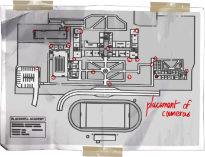
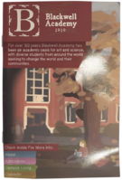
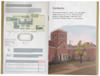

"Por mais de 100 anos, a Blackwell Academy tem sido um oásis acadêmico para arte e ciência,
com diversos estudantes de todo o mundo buscando mudar o mundo e suas comunidades." - Brochura da Blackwell Academy
Blackwell Academy é uma escola secundária localizada em Arcadia Bay, Oregon. A escola é especializada em Ciências e Artes e
atualmente é supervisionada pelo Diretor Raymond Wells.
Blackwell Academy
Tipo:
Escola Privada
localização:
Arcadia Bay
Cordenadas:
Latitude: 45.535068
Longitude: -123.90664
Estado:
Oregon
Historia
Segundo Michelle Grant, a escola foi construída em antigas
terras indígenas americanas, compartilhadas entre os nativos
e os primeiros colonos.
Em 1910, Jeremiah Blackwell fundou a academia, buscando a
excelência entre o corpo discente. A estátua de Jeremias
encontra-se na frente do edifício, com o lema "O futuro
precisa de excelência". No Two Whales Diner, há também um
panfleto em preto e branco de Blackwell, ostentando "Excelência
Global em Artes e Ciências por mais de cem anos e contando."
Entre os eventos de 2010 - 2013, a Blackwell Academy muda seu
currículo e a composição do corpo discente. As razões narrativas
para isso são exploradas por meio de enredos secundários sobre os
eventos depois da tempestade. A mudança de Blackwell resulta na
contratação de professores de arte famosos como Mark Jefferson e a
eventual mudança para um programa especializado de longo prazo de
dois anos. Antes dessa evolução, a Blackwell Academy é uma escola
particular de nível médio com quatro séries. Para algumas escolas
particulares de prestígio, este quinto ano pode equivaler a
crédito universitário ou pode ser visto como uma vantagem para os
alunos entrarem em uma educação artística realmente prestigiosa.
Fora do edifício, existem várias áreas principais:
Campus principal
Estacionamento
Dormitório Prescott
O layout do campus pode ser visto
em um mapa na garagem
Madsen no armário de vigilância
de David.



Dentro da Escola
Dentro do edifício da Academia, existem várias salas exploráveis:
Os corredores
Banheiro feminino
Sala de aula de ciências de Michelle Grant (sala 104)
Sala de aula de arte de Mark Jefferson (sala 102)
Gabinete do Diretor de Wells (e o escritório da secretária adjacente)
Blackwell Swimming Pool (e vestiários)
Laboratório de Drama de Travis Keaton (antes da tempestade)
Outros
Banheiro masculino
Biblioteca
Cafeteria e cozinha
Laboratório de Informática
Media Lab
Laboratório de matemática
Laboratório de Música
Salas de armazenamento
Escritório de Jefferson
Escritório de Negócios
Ao ar livre
Clubes e outros grupos
Grupos mais Prestigiados
Vortex Club - Social Group
Bigfoots - Football Team
Otters - Swimming Team
Outros
Geek Grrls Book Club (led by Brooke Scott)
Drama Club
Vegan Club
Science Gamer's Group
Anti-Mobbing Support/Discussion Group (led by S. Sorber)
Gamer Guyz (led by J. Romero)
Meals on Wheels (led by Kate Marsh)
School Newspaper "Blackwell Totem" (Reporter Juliet Watson)
Bible Study Group (led by Kate Marsh)
Sci-Fi Movie Club (led by Warren Graham and Brooke Scott) (Before the Storm)